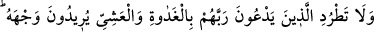
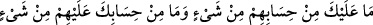
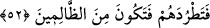

gönderdiği kıymetli elbiseleri giyerek hükümdarın huzuruna çıktıklarında diğer
askerlere övünürler.
İşte Allah Teâlâ’nın sâlih amellere ve temiz hallere muvaffak kıldığı kimselerin
durumu da böyledir. Onların Allah’ın kendilerine özel olarak verdiği şeyleri halka
anlatmaya ihtiyaçları yoktur. Bunu kendilerinin bilmeleri yeterlidir. Bu zaten (insanların
Allah’ın huzuruna çıkacağı) en büyük arz gününde ve insanların dümdüz arazide
toplandığı vakit ortaya çıkacaktır.
“Onlar asil hâdimler ve efendilerdir.
Biz ise kötü köleler ve ne kötü köleleriz.”
52. Rablerinin rızasını isteyerek sabah akşam O’na yalvaranları kovma! onların
hesabından sana bir sorumluluk; senin hesabından da onlara herhangi bir
sorumluluk yoktur ki onları kovup da zalimlerden olasın!
Rivayet edildiğine göre Kureyş ileri gelenleri, Rasûlullah (s.a.)’in yanında Suheyb,
Ammar, Habbab, Bilal, Selman ve diğer bazı fakir sahabileri görünce ona: “Şu köleleri
ve elbiselerinin kokularını -bu sahabilerin üzerlerinde sadece yünlü abalar vardı-
yanından kovarsan, seninle oturur ve konuşuruz.” dediler. Rasûlullah (a.s.): “Ben
mü’minleri kovacak değilim.” (eş-Şuarâ, 26/114) buyurdu. Bunun üzerine: “O halde,
biz gelince onları yanından çıkar ki, Araplar bizim üstün kimseler olduğumuzu
anlasınlar. Çünkü senin yanına Arap kabilelerinden heyetler geliyor. Bizi fakirlerle eşit
tutmandan utanıyoruz. Biz kalkınca dilersen yine onlarla beraber otur.” dediler.
Rasûlullah (a.s.), belki îmana gelirler diye onların bu teklifini yerine getirmeye
niyetlendi. Bunun üzerine Allah Teâlâ zenginin fakire, asil birinin halkın en alt
kesimindeki birine üstün tutulmasını sevmediğini Peygamberine (a.s.) bildirmek üzere
bu ayeti indirdi. Çünkü onun gönderildiği yol, dünyânın halleri değil, Allah’ın dinidir.
“Sabah akşam” zikir ve ibadetleri ile dünyalık bir şeyi değil, sadece “Rab’lerinin
rızasını isteyerek,” ihlasla “O’na yalvaranları kovma.” Kovmak, uzaklaştırmak
demektir. Âyetin mânâsı şöyledir: “Gece gündüz Rab’lerine duâ edip onu zikreden
fakirleri kendi meclisinden kovma.”
Sabah ve akşam vakitlerinin zikredilmesinden maksat, devamlılıktır. Çünkü zikri
devam edenin Allah ile beraberliği de devam eder. Nitekim kudsî bir hadiste: “Ben,
beni zikredenle beraberim.”[108] buyurulmuştur.
Duâda ihlasın şart koşulması, işin özünün ihlâs olduğuna dikkat çekmek içindir.